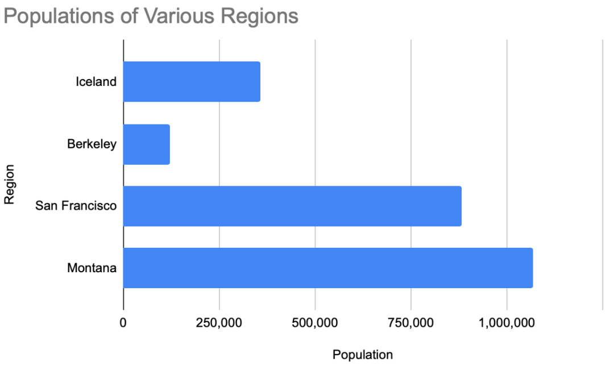
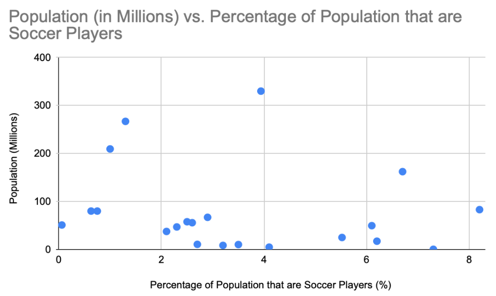
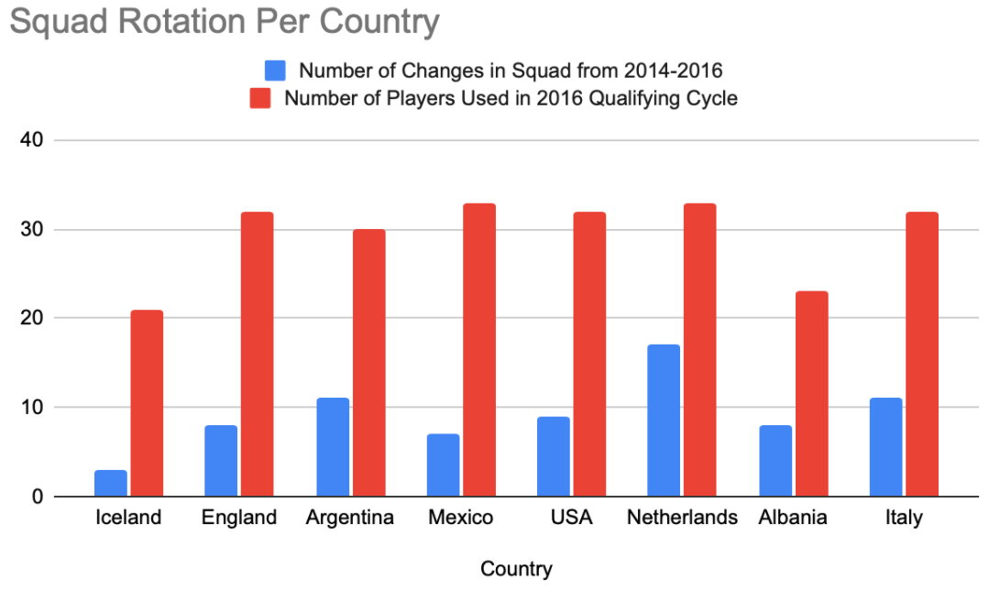

The Growth of Iceland Soccer
By Shayan Hussain | November 29, 2020
No matter how cultured you may be in the game of soccer, nobody can say they saw coming the result of a Euro 2016 knockout match between Iceland and England in June 2016. Advancing through the group stage in their first ever major international tournament was a fairy-tale story for Iceland, but it was time for them to pack their bags. The mighty creators of soccer, England, were awaiting them in the last 16. Yet, 90 minutes and two Joe Hart howlers later, the infamous Icelandic viking clap was filling the streets of Marseille. So, how did a country with ⅓ Montana’s population (and .5% of their opposition, England’s), manage to reach the last 8 in 2016, and qualify for 2018’s World Cup as well?
One step towards the complete answer dates back to 2000, when the nation, after another dismal qualifying campaign for Euro 2000, decided to build its soccer infrastructure in an attempt to elevate its game. Iceland is one of the coldest countries in the world; its max daily sunlight hours comes in at July with 6. Thus, those in charge came up with the brilliant idea of building indoor fields all over the country. Since then, the nation has sprouted 7 full sized “indoor soccer halls” and 20 heated outdoor fields, leveling out the playing field by giving its people equal access to the game as most other nations around the world.
While these numbers are impressive, the nation’s next idea was even more revolutionary. Along with the indoor and heated fields, they also built a “mini pitch” for each school in the country, giving kids the opportunity to run around on a field every day at school. This ensured early interest in the game from a young age as well as more touches on the ball for everyone playing, since the small field meant less people playing at once. The result was a boom in serious soccer interest among Icelanders.
To be exact, Iceland has 22,100 registered players, accounting for 7.3% of the country’s population, while only around 2.6% of England’s population plays competitively. This staggering difference is also present on the coaching side of things: 1/1700 Icelanders possesses a UEFA A coaching license while the number in England stands at 1/50,000 people. On the field, this translates to far more interaction between players and coach, and as a result, a greater ability for Icelandic players to implement the ideas and plays their coaches create for them. Similarly, Iceland updated their requirements for earning a coaching badge, making people work harder to earn the same honor in terms of coaching. This meant that Icelandic coaches were more educated on the game than their English counterparts.
Each dot on the above plot represents a specific country, illustrating that countries percentage of soccer players compared against its population. The point second furthest right (located at approximately (7.3, .003)) represents Iceland, showing that only one other country has a larger percentage of soccer players regardless of Iceland’s tiny population. The country with a larger percentage is Germany, and very few other countries even come close.
Given the nature of Iceland’s small towns and closely interconnected life due to its low population, another interesting factor to consider is team chemistry. Many of Iceland’s professional players at the Euros grew up with one another, and played soccer together as children. On the other hand, England’s stars had spent their youth bouncing from team to team year after year, meaning that England was fostering soccer catered to the individual, while many of the Icelandic players had developed their games alongside each other, strengthening their connections and understanding of each others’ styles and movements on the field.
This idea translates from the youth to the present as well. Between 2014 and 2016, spanning the entire 10 matches of Euro qualifying, Iceland used just 21 unique players. On the other hand, England used 32. Similarly, England made 8 changes between their squads for the 2014 world cup and the 2016 Euros, while Iceland made just 3 changes between their squad in that timeframe. This continuity in the team plays a large part in the players knowing and fighting for one another, and thus could be another contributor to the Scandinavians’ superior performance at the 2016 finals. The plot below also illustrates how the numbers of players used in this time is very low for Iceland compared to all different countries. Note that Albania, who also qualified for the 2016 finals in completely surprising fashion, were similar to Iceland in terms of their trust in a core group of squad players.
While their one matchup in 2016 does not dub Iceland a better team overall than England, the factors described here demonstrate how much better the Iceland team have become in a short period of time. In fact, between 2010 and 2018, Iceland moved from the 90th ranked nation to the 18th ranked in the world on the FIFA Rankings. Other teams who were around 90th in 2010, like Angola, Oman, Haiti, and Moldova, have all found themselves lower than 100 in 2018, showing that such an incline is no easy feat. The line plot below illustrates the change in rankings for multiple countries during this time period. It does a good job of demonstrating the tangible results of all these little changes made by the Icelandic football association which have been discussed in the article.

This shows us that Iceland has improved exponentially at soccer in recent times, likely the result of its vast improvements in coaching, higher availability of fields to combat poor weather, having a high proportion of soccer players, and keeping continuity in the team over time. Most importantly, all this is possible due to their huge passion for the game of soccer. Thus, the “darkest day in English Football” was no freak show; Iceland has been improving steadily over time and are ready to establish themselves as a generational soccer force. This is why they were also able to get a draw with Ronaldo’s Portugal in 2016 and Messi’s Argentina at Russia 2018, and why you shouldn’t be surprised if they make a splash against Germany, France, or both at this summer’s championship as well.